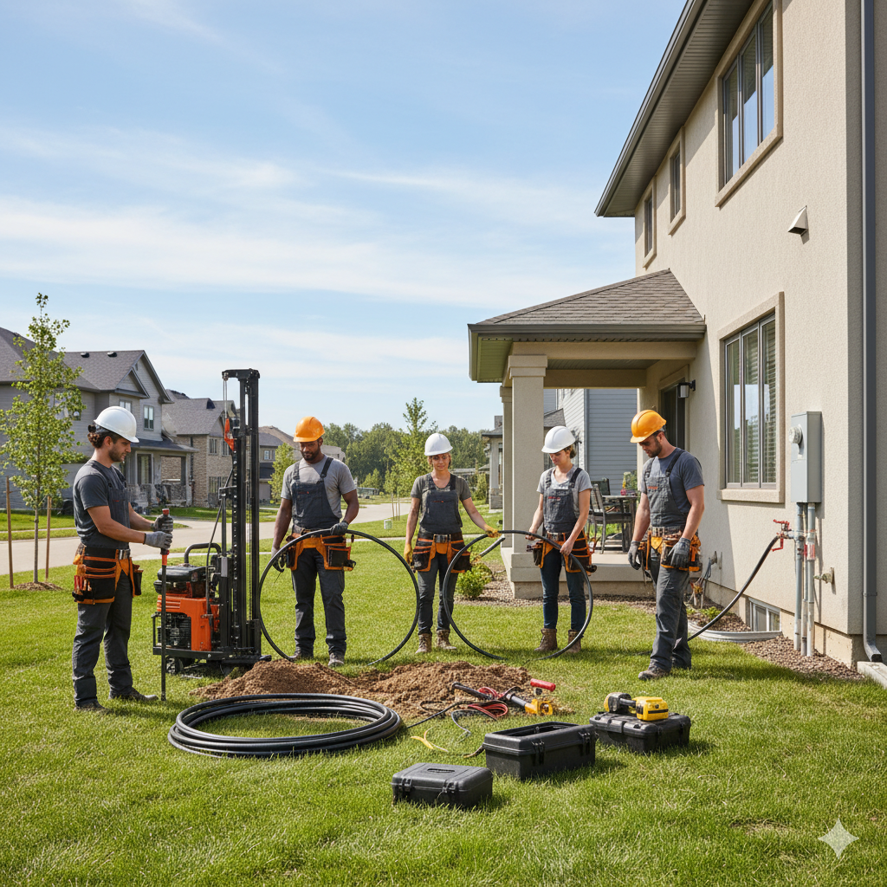

<<<<<<< HEAD Nossa missão sempre foi clara: tornar a energia limpa, eficiente e sustentável acessível para todos os lares. A energia geotérmica residencial não é apenas uma tecnologia; é o coração da nossa história e a base da nossa visão para o futuro.Raízes de SustentabilidadeTudo começou com a percepção de que, bem abaixo da superfície de nossas casas, reside uma fonte de energia constante e inesgotável. O calor natural da Terra proporciona um meio notavelmente estável e eficiente para o aquecimento e resfriamento de ambientes, superando em muito os sistemas tradicionais.No início, vimos que a maioria dos sistemas de climatização dependia de combustíveis fósseis ou de eletricidade gerada de forma não sustentável. Isso nos motivou a pesquisar e desenvolver soluções que aproveitassem o princípio da bomba de calor geotérmica, um ciclo termodinâmico que simplesmente move o calor, em vez de criá-lo.1998: Início da pesquisa e desenvolvimento em colaboração com universidades, focando na otimização da eficiência dos trocadores de calor.2003: Lançamento do nosso primeiro sistema geotérmico residencial, notável pela sua durabilidade e baixíssimo custo operacional.Hoje: Milhares de casas em todo o país desfrutam de conforto superior e contas de energia drasticamente reduzidas, graças aos sistemas que são o resultado direto de anos de inovação e dedicação.=======Nossa missão sempre foi clara: tornar a energia limpa, eficiente e sustentável acessível para todos os lares. A energia geotérmica residencial não é apenas uma tecnologia; é o coração da nossa história e a base da nossa visão para o futuro.Raízes de SustentabilidadeTudo começou com a percepção de que, bem abaixo da superfície de nossas casas, reside uma fonte de energia constante e inesgotável. O calor natural da Terra proporciona um meio notavelmente estável e eficiente para o aquecimento e resfriamento de ambientes, superando em muito os sistemas tradicionais.>>>>>>> 7bb811437b44126eb76f31ba7e630dff62d480c3
Climatização Perfeita o Ano Todo: Instalação de Bombas de Calor Geotérmicas que utilizam a temperatura constante da Terra para aquecer sua casa no inverno e resfriar no verão. Diga adeus ao ar condicionado tradicional e desfrute de um ambiente interno sempre agradável.
O aquecimento de uma piscina residencial por energia geotérmica funciona através de um sistema de alta eficiência chamado Bomba de Calor Geotérmica (BCG). Este sistema não gera calor, mas sim o transfere do subsolo (a Terra) diretamente para a água da piscina, utilizando um ciclo termodinâmico.
Esta tecnologia é ideal para hospitais, pois estes exigem um fornecimento contínuo e consistente de aquecimento e arrefecimento, e a energia geotérmica é uma fonte altamente confiável, eficiente e renovável.
Essas empresas apoiam e patrocinam nosso projeto, tornando-o possível.